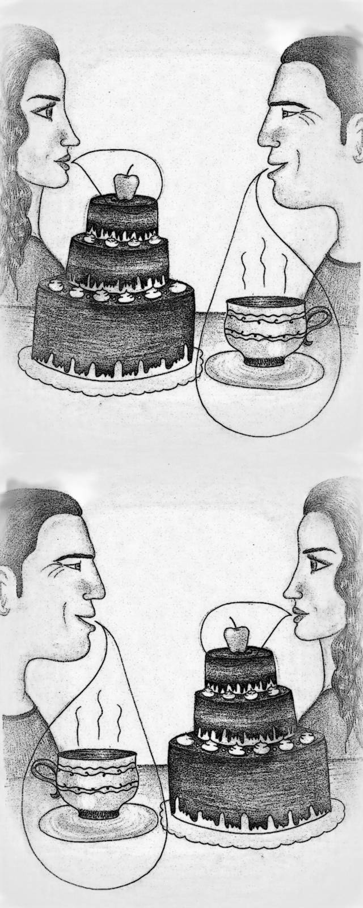

« předchozí článek | obsah čísla | následující článek »

Následující myšlenky nemusejí být v žádném smyslu pravdivé.
Předkládám vám je jako výplody své duše bez jakékoliv záruky,
dokonce bez implicitní záruky pochopitelnosti.
Jsou to myšlenky s ručením omezeným.
- Existence neidentifikovatelných létajících objektů vypovídá mnohem méně o existenci mimozemských civilizací než o lidské neschopnosti identifikovat létající objekty.
- Pravda je krásná uvnitř, lež na povrchu.
- Pravda se obratně vyhýbá těm, kdo jsou přesvědčeni, že ji již dávno mají.
- Lidé se nedělí na ty, kdo mají pravdu, a ty, kdo ji nemají, ale na ty, kdo pravdu hledají, a ty, kdo (mylně) věří, že ji již našli.
- Emoce, či rozum? Toť otázka.
- I kostlivec ve skříni má Achillovu patu, má však Achillovu šlachu?
- „Souhlasíte, že toto jablko je moje třešnička na dortu?“ - „Lituji, ale vaše vyjadřování není můj šálek čaje.“
- Příroda si u lidí vystačí se třemi pohlavími, lidé tak skromní nejsou.
- Proč musejí mít rolety umělou inteligenci? Protože výrobci umělé inteligence pro rolety nechtějí zemřít hladem. Jen počkejte, až se o své přežití přihlásí výrobci umělé inteligence pro jídlo.
- Děti nemohou být svobodné, dokud se nebudou rodit samy.
- Rasismus, nebo svoboda?
- Jaký je politicky korektní název pro politickou korektnost?
- Má smysl klást otázky, na které se nikomu nechce odpovídat?
- Jestliže existují vztahy mezi lidmi, musejí existovat i lidé mezi vztahy.
« předchozí článek | obsah čísla | následující článek »